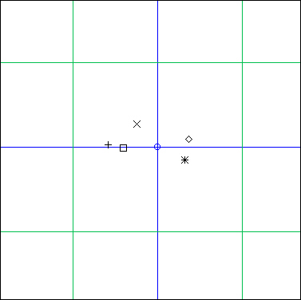
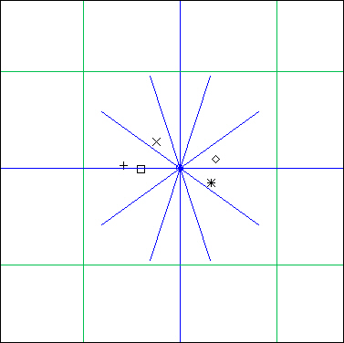

GeoMaestro
- DEPRECATED ! -
Tutorial
We will suppose you have started the graphic tool and have a console window available. Click on "new" to initialise the event scene, and on "grid" twice to have axes and loose grid on.
Using the mouse mode "new event", click in the scene somewhere in the green square around the origin, and enter 1#'a' in the pop-up window. Repeat this with 2#'b' , then 3#'c' , then 4#'d' and finally 5#'e'
You should have something like that in your window now (use "zoom in" and "zoom out" to adjust the view):

We're going to generate a projection using the Helice() projector. To define the rotation center point, we can either use the console and type Or = xyd(0,0) or use the "new point" mouse mode. If you do so, click around the center and enter Or as the name of the defined point. If you want this point to be exactly the center (x=0, y=0) and only use the GUI, then select it (it should now be a blue circle), click on "operation" and type x=0 ; y=0
If you defined Or with the console, you won't see it in the GUI. To see it, click on "display" and type Or. That's it !
Now you should have this:

At the moment, you can't call a projector from the GUI. You have to use the console like a poor ol' hacker, so go there and type:
L = Helice(Or, 1, 0, 0.2*Pi, 1)
To see what happened, click on "display" and type L. You should have this in your GUI:

The new blue lines we have are the segments Helice() used as parameters for Ecoute(). The five events have been projected in the first one (the horizontal one), so a MIDI phrase of length 2*CPCM (that is 2 seconds, if you didn't change CPCM) has been rendered, then on the second one, giving a new phase that have been added to the first one, etc.. we have ten segments but you only see five of them in the graphic tool since we used a step of 0.2*Pi, so there's an overlapping. The total music duration is then 20 seconds
To hear the result, type this in the console:
L["ph"]
(here is the one I got doing this tutorial: tut.mid )
Note that everything is played at the piano, since GeoMaestro channels are not identical to MIDI channels ! Only MIDI channel one has been used here. More of this later, as this tutorial is not completed yet, sorry...
-- Back --